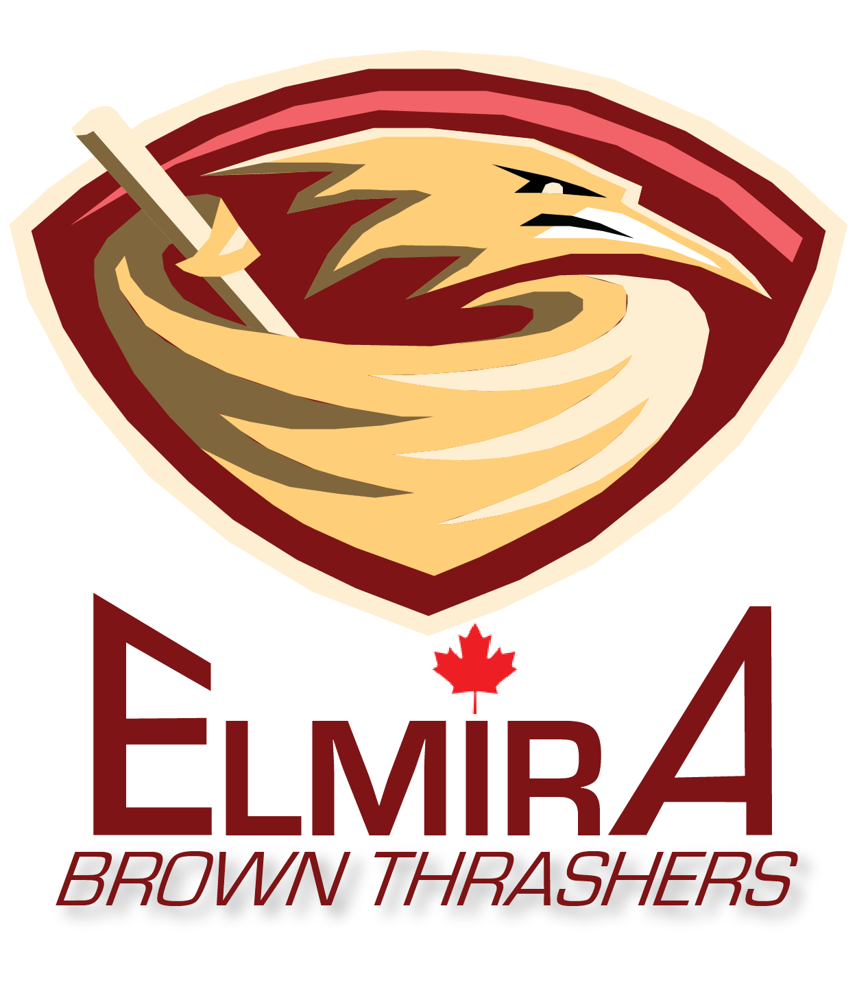

The Elmira Brown Thrashers are proud to enter their second season of baseball in the Ontario Baseball League. They finished last year with a respectable 76-86 which is very good for an expansion club. Next season should prove to be a very interesting with a very telented group of player returning for an even improved campaign. Rookie Todd Martin is expecting to continue his success and improve on his team leading 25 home runs from the previous season, and Juan Perez stunned the baseball world with his 18 wins as a rookie. With more talented rookies joining the club this year and solid veteran players the organization is predicting our first winning season in just our second year of existance.
Ever since the Reilly McDonald incident that killed Major League hockey across North America, millions of people have been looking for a way to release their frustrations. Then one such tychoon, Paul Harvey, came up with the Ontario Baseball League. Now with 30 teams across the league, competative baseball has not been better. No more killings, steroids and human torture on the fields this league promotes good old fashioned baseball. So put down your axes, and barbed wire hockey sticks and visit Canada's new past time. Baseball.
League news: 6 stadiums are currently building or rennovating their stadiums with great success. All stadiums are on target to be completed by the start of the 2015 season on April 4, 2015. The Alliston Alley Cats new stadium, currently not named will be a 24,000 seat stadium with all a second ball park for their minor league team. The Hamilton Hammers are going to rock the baseball world with a 60,000 seat arena located at the old Mohawk track. This stadium will have it all, horse-racing, a casino and professional baseball. This project is going to open in January 2015. The Oakville Odometers also have a 45,000 state-of-the-art facility in progress which will host their baseball franchise and their new CFL franchise the Oreos. This area will open for spring training in February. The Harry Lumley Arena in Owen Sound has been home to the Owen Sound Attack of the Ontario Hockey League, now they are getting a new revamped addition to the arena with a 20,000 seat stadium. Construction is mostly finished and the project should be completed by the beginning of the baseball schedule. The Longview Dome in Peterborough has been completed as of November and will showcase the 35,000 seat feat of awesomeness to the world on April 5. The scoreboard in left field is very reminiscent of the big monster in Boston. Lastly, The Gretzky stadium in the Sault. A beautiful 40,000 seat arena right on the lake. Even would bring a tear to the great one's eye. More stadium updates to come.
| Team Leaders |
|---|
| Home Runs - Todd Martin 25 |
| Runs Batted In - John Savage 79 |
| Stolen Bases - Ricky Szabo 40 |
| Wins - Juan Perez 18 |
| Earned Run Average - Juan Perez 2.86 |
| Strikeouts - Manuel Jiminez 196 |